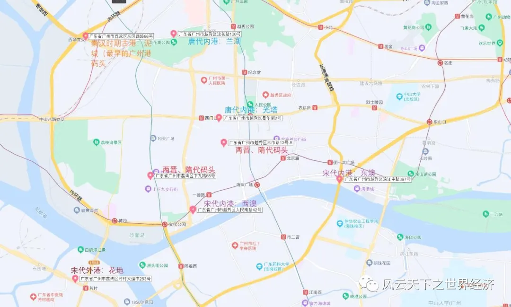
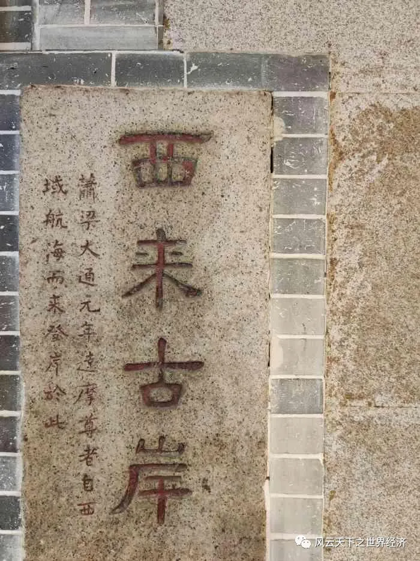
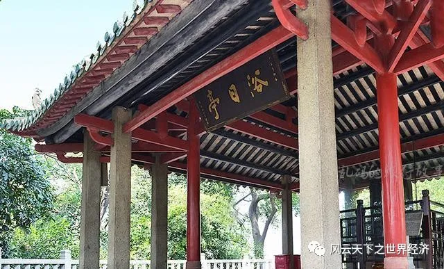
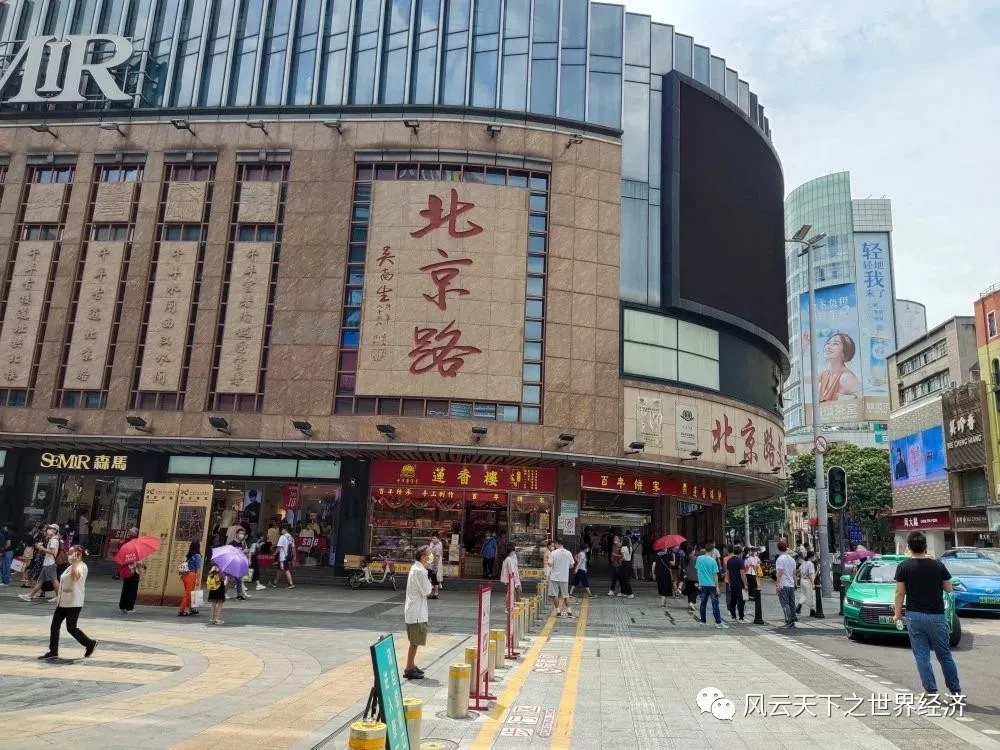
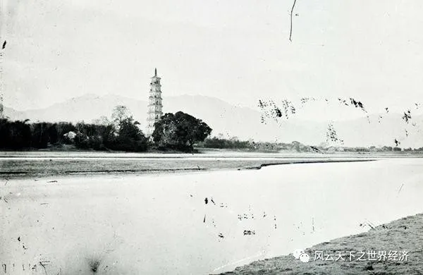
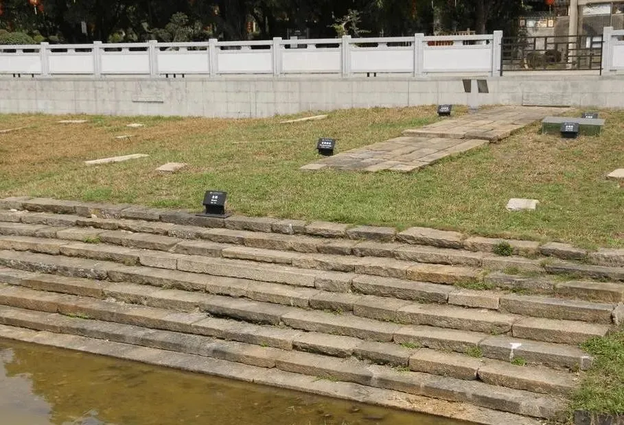

那一天，你在珠江边散了一万一千步，不为潮声，只为一首长歌，藉此你穿越了广州港的千年浪漫……
泥城、坡山、兰湖、东奥、扶胥、大通、风埔……这些陌生的地名在如今的广州城已难觅踪影，因时过而境迁，西场、惠福、流花湖、东濠、庙头村、花地、黄埔……是它们的现代名称。即使是土生土长的老广一时也不会将它们和广州港联系在一起，但这些略显怪异的名称的确曾经是不同时代东方第一大港——广州港的地理所在，如今却成了名副其实的珠江遗珠。

古今广州港地理变迁
繁荣的商业需要发达的交通作为支撑，坐落在珠江三角洲中心位置的广州河海相接、水道密布。一座千年古港为这座岭南商都提供了最有力的注脚。如今谈及“广州是否是一个沿海城市”这个问题时，多少会让人们觉得有些困惑。但是，位于七星岗古海岸遗址的海蚀地貌保留着广州作为一个海港的古老证据。而世界第四大港广州港的存在，也足以证明广州是一座向洋而生的城市。
广州港由内港、黄埔、新沙和南沙等四大港区构成，站在位于最南端的南沙港区溯流北望，稠密的珠江河道如毛细血管般铺展在珠江三角洲的土地上。作为中国水量第二大的河流，珠江以3360亿立方米的年径流量携带着滚滚泥沙一路向南、千年不改，把珠江三角洲以每年近10米的速度向南海推进。由此逆推，古代广州港的方位要比现在更加靠北。正是追随着海洋的气息，广州港历时2000多年，才来到它现在的位置——南沙龙穴岛。
东风西路的西场，是广州最有名的服装和电器商圈之一。此处距离最近的珠江西航道中的大坦沙直线距离约为2公里。在秦汉时期，这里被叫做泥城，珠江古河道从此奔流而下直入南海，广州的古港记忆也是从这里开始的。相传将南越并入大汉版图居功至伟的陆贾首次出使便在此登陆。
当时广州港所在的番禺虽贵为岭南第一大都会，但是由于航海技术尚处于粗陋的大陆架航行时代，加上番禺北上“水道多绝，难行”，中华物产难以运抵，因此其作为港口的地位远不如西部的徐闻、合浦两地。
Part1魏晋：西来初地
孙吴政权时代，为加强对岭南的开发，交州、广州分治，广州作为华南行政中心的地位日渐凸显。广州港声名日隆，并逐步取代了徐闻、合浦港成为南海“海上丝绸之路”的新起点，此后历经千年而不衰，开启了它作为中外商人心中财富荟聚之地的华丽篇章。
两晋时期，以贸易之名，东西之风开始交汇于此。印度僧侣菩提达摩在西来初地码头登岸，并修建西来庵（华林寺）传经布道。来自大秦、天竺、狮子国的商人络绎不绝，天下物品经由水路船舶汇聚于此，广州“宝货所出，山海珍怪，莫与为此”。而且，源自贸易的丰富税收让广州刺史成为各路官员竞相追逐的肥缺，俗称“广州刺史经城门一过，便得三千万钱”。

西来初地
此时，广州港也从泥城开始了东迁之路。码头移至坡山（今惠福西路）和西来初地（上下九路北侧西来正街一带）。
随之而来的隋唐，中华之国进入又一个盛年。广州携地利天时，一跃成为中国海外贸易第一大港和世界贸易东方第一大港。
Part2隋唐：扶胥浴日
煌煌大唐289年，唐太宗“临抚四极”的大地雄心奠定了帝国的开放基调，再加上晚唐以前稳定的政局，引得四方商贾蚁聚，蕃夷贡使纷纷入朝。开元二年（714年），广州设立中国历史上第一个管理对外贸易的机构“广州市舶使院”。对外友好的开明政策连续且稳定，推动广州的对外贸易进入一个空前繁荣的时代。
对外贸易的繁盛对港口的容量产生了更高的需求，唐代开始有了内港和外港的划分。而此时的坡山港因河道淤积，已经难以应付络绎而来的商贾和货物，因此内港码头逐渐迁至南濠和兰湖。南濠码头亦称光塔码头，位于今天广州西关的光塔街一带。唐时为了方便外商安于广州进行贸易，还划出了光塔街一带专供外商居住，史称“蕃坊”。阿拉伯人哈姆撒所建光塔（今怀圣寺光塔）除了“以祈信风”的作用以外，还可以指引航路。可以想见当时此处必是酒肆店铺林立、一等繁华，使得光塔码头成为唐代最大最主要的内港码头。
兰湖码头则是一个水陆内河码头，位于今天的流花湖公园。因唐代的流花湖是珠江水道的一部分，由佛山、北江、西江而来的货物在此泊船登岸进行交易。
“广州通海夷道”在唐代已经远至波斯湾、红海东非沿岸以及欧洲诸港，远洋贸易航路的开辟使得大型船舶开始驶抵广州，因此外港需要深入大洋，这样才能为远洋大船提供足够深度的泊位码头。如今沿着宽阔的黄埔东路一路东行，在电厂二路折向南，有一座绿树掩映、古朴清幽的古刹——南海神庙，这就是韩愈诗中的“扶胥之口，黄木之湾”所在。庙内供奉的南海神相传可以保佑过往行船一帆风顺。神庙还有一别称——波罗庙，音译自梵语“波罗密特”（Paramita），意为“到达彼岸，做事成功”，虽然称谓不同，但是表达的意旨却异曲同工，而庙前空地上“海不扬波”的牌坊也传递着类似的祈愿。庙门左侧的山岗上建有“浴日亭”，亭内背靠背立有苏东坡和陈献章石碑各一块。站在浴日亭上极目远眺，狮子洋上烟波浩渺赫然于眼前，吐纳着来自不同国度的货船商轮，气象恢弘壮观，成就了古代广州“羊城八景”之一的“扶胥浴日”。

南海神庙浴日亭
除了扶胥港以外，位于今日香港新界的屯门青山湾，则是唐代广州的另一个外港，也是“广州通海夷道”的第一站。从地理位置上看，屯门扼守珠江口外交通要冲，唐代凡阿拉伯、印度、中南半岛及南洋诸国商船来广州，必先停碇屯门，然后再依次入扶胥，进兰湖光塔。内外港沿珠江水道一字排开，海河相接，井然秩序昭示着唐代广州港在欧亚贸易中独一无二的地位。
Part3宋元：海山晓霁
经历了五代十国短期的混乱之后，进入北宋的广州迅速恢复了唐代贸易的繁荣景象。作为唐代市舶使所在地的“海阳旧馆”得到了大规模扩建，从此得名“海山楼”，拥有背山面海的雄浑气魄，成为珠江北岸的标志性建筑。
宋代广州的海岸线进一步南移至今天一德路一线，海山楼旧址便坐落于此，大约位于北京路和大南路交界处。这里不仅可以饱览珠江天高海阔的壮美，还可以领略番舶云集、舟楫交错的繁荣景象。“海山晓霁”也因此得以跻身宋元“羊城八景”之一，在遥远的南国呼应着都城开封的“东京梦华”。

今日海上楼旧址
宋代文献有言：“岭以南，广为一都会，大贾自占城（印度支那古国）、真腊(今柬埔寨境内）、三佛齐（苏门答腊)、阇婆（爪哇），涉海而至，岁数十柁。”从南洋而来的无数番船在这里靠岸，无数粤商的商船也从这里出发远航。宋代海外贸易达至鼎盛状态。
因水路变迁，广州的内港外港均出现位移。内港东移至南濠（今南湾街一带）和东濠（今清水濠街一带），外港则由隋唐的扶胥港逐渐移至大通港（今芳村花地）和琶洲（今海珠琶洲村）。
Part4明代：琶洲砥柱
明代的对外政策一改唐宋元各朝对待海外贸易的开放态度，仅准许与明朝有朝贡关系的国家以“朝贡”形式进行，贸易活动“时禁时开，以禁为主”。明太祖时期甚至实行过“寸板不下海”的出海禁令，这就是“海禁”政策的滥觞。明代的朝贡贸易体系因为开放理念的萎缩而日渐扭曲变形，贡舶与市舶进一步绑定。明代前期，“凡外夷贡者，我朝皆设市舶司以领之，……许带方物，官设牙行与民贸易，谓之互市。是有贡舶即有互市，非入贡即不许其互市”。
在日趋森严的朝贡体系下，广州依托远离朝廷中枢的地利以及厚重的海外贸易历史，赢得了一些宝贵的特殊政策。例如，准许非朝贡国家商船入广东，惟存广州市舶司对外贸易。这让广州在海禁政策夹缝里获得了些许难得的生存空间，千百年来的开放基因得以幸存并延续下来，民间对外贸易的得以繁荣不废，呈现出“番舶不绝于海澨，蛮夷杂于州城”的繁荣景象。到明中后期，民间贸易的繁荣开始反噬朝贡贸易体系，嘉靖三十二年（1553年），朝廷允许非朝贡国家葡萄牙人租居浪白澳、澳门，方便和“中国第一大港广州进行贸易”，至此，明初打造的朝贡体系在广州已然名存实亡。
贸易的繁荣催生了广州港码头的变迁，总体的发展趋势是内港码头进一步向广州城外移动，宋元时期的外港向城内靠拢，城外新增了一批外港。明代的内港设在蚬子步（今西关十七甫），为方便外商从事贸易活动，附近设立了“怀远驿”，以昭示大明王朝“怀柔远人”的帝国之心。怀远驿伴随明制朝贡体系百余载，直至清代才因珠江北岸向南延伸而被位于其南的十三行夷馆所取代。历经唐宋元三代的广州港外港扶胥码头因“淤积既久，咸卤继至……水稍退，则平沙十里，挽舟难行，进退两难”逐渐被废弃，而离广州城更近的黄浦洲（今海珠区琶洲街黄埔村）一带则得到了重点开发，黄埔港码头从此接续了广州港的千年荣辱，承担起了外港的使命。
由扶胥到黄埔，广州外港的变迁一反之前东迁的大趋势，开始向城内收缩，这一方面是因河流改道的天然因素所致，另一方面也反映了明帝国对外态度的微妙变化，黄埔港口作为护卫广州安全的最后一道屏障，其军事防御功能也在这个时代开始被重视。明代万历二十五年（1597年），“于洲上建九级浮屠，屹立海中以壮形势，名曰海鳌塔”。海鳌塔也叫琶洲塔，因此岛形似琵琶而得名。遥想当年，琶洲塔耸立于烟波之上，从远处望去，犹如江中的中流砥柱，一举成就了后来清代羊城八景之一的“琶洲砥柱”盛景。不仅如此，琶洲塔更是与此后修建的赤岗塔、莲花塔遥相呼应，指引珠江之上的货船安全驶抵广州内港贸易。

琶洲砥柱旧影
内港贸易繁荣的标志性事件是春夏两季在海珠岛举办的为期数月的定期市，这也成为日后驰名海内外的广交会的前身。靠近海珠岛定期市周围的濠畔街、高第街一带更是成了“香珠犀角如山，花鸟如海,番夷辏辐,日费数千万金，饮食之盛,歌舞之声,过于秦淮数倍”的繁华街区。
嘉靖三十二年（1553年），而且为了防止蕃商杂居广州城所带来的风险，明政府允许葡萄牙人进入和租居濠镜（今澳门）。这里本是广东香山县的一个小渔村，因此而逐渐成为一个特殊的葡萄牙侨民社区。这一政策也让广州港有了一个稳定的中转港，在澳门这个中转港的加持下，广州港通往海外的航线进一步拓展，欧洲、拉美、长崎、东帝汶，这些遥远的所在统统在此时被纳入到广州港的远航版图中，真正的全球贸易时代终于来临。
Part5清代：黄埔云樯
清初延续了明代的海禁政策，但是广东地方官僚深知禁绝广州海外贸易实属不易，而且通商贸易带来的巨额税收也让他们有动力积极上疏朝廷，争取到了“许濠镜澳商人上省，商人出洋”的特殊政策。顺治一朝，对广东的例外政策一直阴晴不定、时紧时松，这种情况一直持续到康熙二十三年（1684年），海禁政策被废除，管理对外贸易的江浙闽粤四海关先后设立，千古一帝似乎找回了中华先辈那种气吞万里的雄浑气魄，将中国的东部1.8万绵长海岸线悉数开放。但是，这种政策仅仅维持了七十三年便告终结。
乾隆二十二年（1757年），清政府宣布撤销江浙闽三海关，规定“番商将来只许在广东收泊交易”，是为一口通商，在西方经济史上也被称为广州制（Canton System）。自此，广袤中华帝国的对外贸易便由广州一地所垄断，一直延续到道光二十年的鸦片战争。在这长达83年的时间里，广州港携垄断中国海外贸易的政策红利，进入其他兄弟港口艳羡不已且不可复制的黄金时代。
此时的明代琶洲码头淤浅，不复具备外港的功能属性。菠萝庙的黄埔港（现黄埔旧港）又恢复了唐宋外港的显赫身份。2005年，瑞典东印度公司古商船“哥德堡号”即将重返广州之际，在南海神庙广场前发现了保存较为完整的清代码头遗址。古码头步级保存完整，有九级踏跺、两侧砌石，通往庙内的路上铺五板麻石，喻为九五之尊，颇具皇家气派。

南海神庙清代古码头
内港则进一步东移至琶洲附近的风浦（今黄埔村），尽管这里仅是粤海关广州大关的一个挂号口，但是因为它特殊的地理位置，成为中外商人进出贸易的必经之所。康熙二十年至乾隆二十二年（1685—1757年），一口通商前夜，来往江浙闽粤四海关的商船共312艘，其中到黄埔港者279艘，占比89%，是当之无愧的中国第一港。晚晴时期，对于中国海外贸易颇具象征意义的众多商船曾多次到访这里，来自瑞典的“哥德堡号”，来自美国的“中国皇后号”，来自俄罗斯的“希望号”和“涅瓦号”，来自澳大利亚的“哈斯丁号”。1769年，英国人威廉·希克在亲眼目睹了黄埔港的熙来攘往后感叹道：“珠江上船舶运行忙碌的情景，就像伦敦桥下泰晤士河。不同的是，河面的帆船形式不一，还有大帆船。再没有比排列在珠江上长达几里的帆船更为壮观的了”。
1986年，“黄埔云樯”入选新“羊城八景”，这既是对现代黄埔港远洋巨轮往来不绝、帆樯如云的诗意描述，也是对昔日繁华胜景的追忆。
两千多年来，珠江水如白练绕郭，不舍昼夜，恍若珠江三角洲大地之书上的蜿蜒线谱。而广州港则是千百年来跃然于琴谱上的灵动音符，撩动中国海外贸易的碧海琴音绵延千年而不绝。